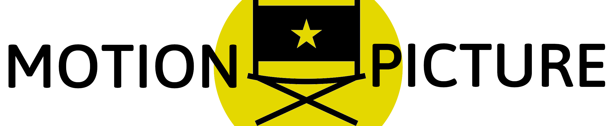

Scientific codes
kuibit
kuibit is my biggest project to date. It is a Python library to analyze simulations performed with the Einstein Toolkit. The package takes care of all the low-level details and removes most of the friction in studying simulation outputs.
motionpicture

motionpicture is a tool that simplifies making movies with Python. If you know how to make one frame, with motionpicture you get the entire movie for free. The package supports a plug-in system, so you can easily make movies via command-line.
ciak
ciak orchestrates the execution of other
programs for you. It is a convenient tool to prepare and run analysis of
simulations. Similarly to motionpicture, its plug-in system promotes code
reuse.
Jhuki
I am slowly developing Jhuki, a Python package to prepare parameter files for simulations for the Einstein Toolkit.
SonoranThorns
SonoranThorns is my personal collection of Einstein Toolkit thorns. Modules in this repository have been thoroughly validated and tested.
LaTeX-paper-template
I use GitHub to write my papers, so I prepared a template repo. The template uses GitHub actions to compile images, the paper, and to produce a zipped folder for submission to arXiv.
Emacs extensions
emacs-libvterm
I am maintainer of emacs-libvterm, the fastest terminal emulator for GNU Emacs. Vterm uses an external library, libvterm, to provide users with an experience that is close to using a full terminal emulator inside Emacs.
bibslurp
bibslurp is a front-end for accessing adsabs from Emacs. I use it in combination with org-mode to maintain a database of papers and reference keys on my laptop. I am not the original author of bibslurp, but I forked the project when ADS rolled out their new design. My fork uses the official APIs. It works but is still rough around the edges.
ivy-emoji
ivy-emoji is a small utility for Emacs to insert any emoji in a given buffer. It is based on the ivy completion framework and it is available on MELPA. I use it all the time when I chat on telega.el.